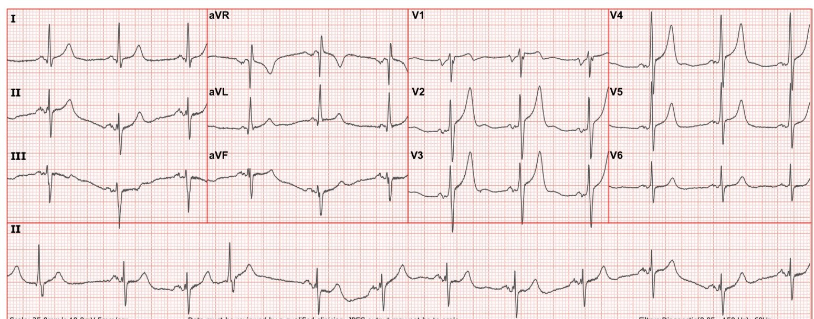
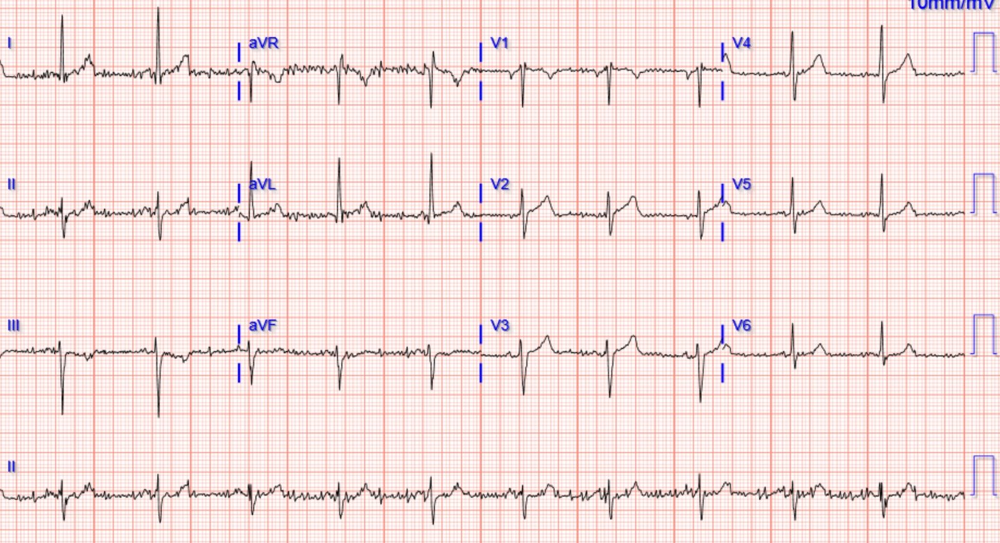
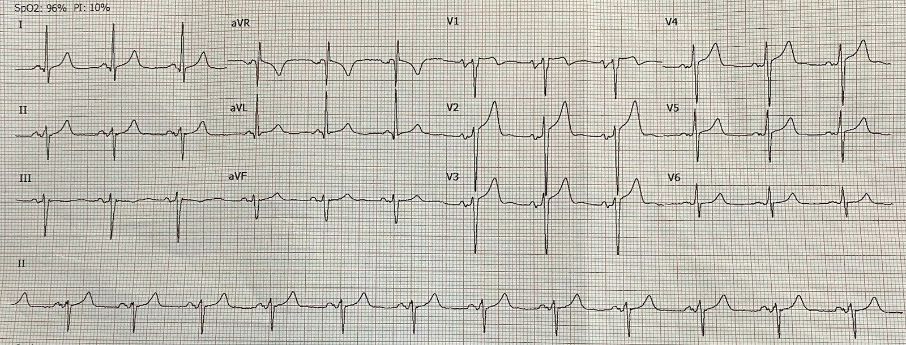
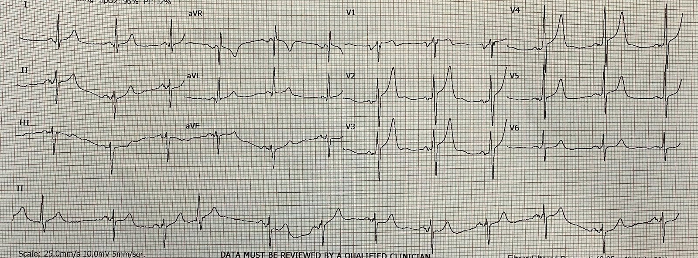
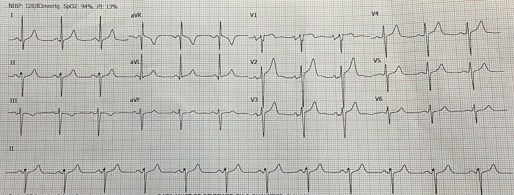
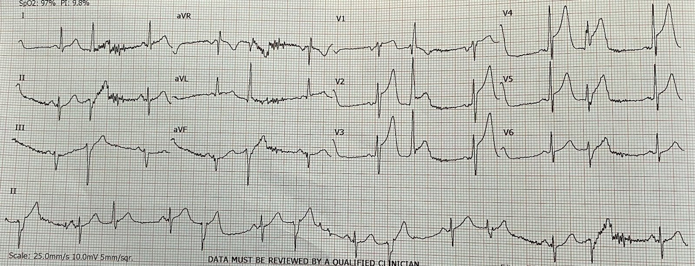
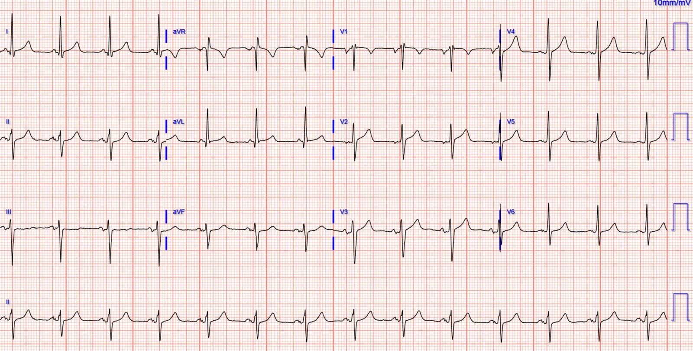
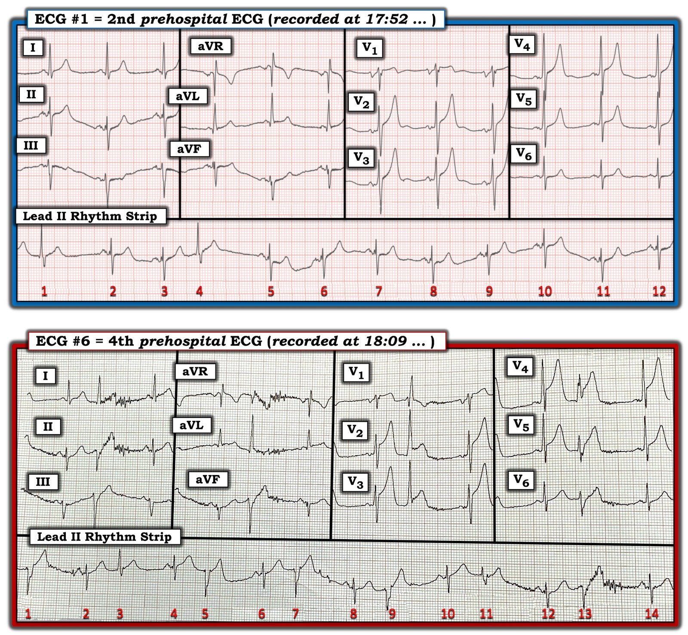

03/10/2022 — Đau ngực một ngày sau nghiệm pháp gắng sức âm tính
Bản dịch tiếng Việt của bài "Chest pain one day after a negative stress test" – Dr. Smith’s ECG Blog. Giữ nguyên toàn bộ 10 hình ảnh và 4 video của bản gốc.
Bài viết của Dominic Nicacio MD, được Pendell Meyers và Steve Smith biên tập
Một người đàn ông ngoài 50 tuổi có bệnh động mạch vành (CAD) đã biết và từng đặt stent, được đội cấp cứu ngoài viện (EMS) đưa đến khoa cấp cứu (ED) một ngày sau khi xuất viện từ một đợt nhập viện vì đau ngực với nghiệm pháp gắng sức âm tính. Ông bị đau ngực tái phát vào đêm sau khi xuất viện và đã gọi EMS. EMS ghi nhận ông vã mồ hôi rõ rệt. Ông được dùng nitroglycerin ngậm dưới lưỡi và aspirin liều đầy đủ. EMS gọi qua bộ đàm và báo rằng bệnh nhân đang đau ngực với những dấu hiệu đáng lo ngại ở các chuyển đạo trước của điện tâm đồ. EMS đã truyền điện tâm đồ cho các bác sĩ khoa cấp cứu.
Nhưng khi nhận được điện tâm đồ này từ EMS, chúng tôi không hề biết gì về bệnh sử nêu trên, ngoài việc đau ngực cấp và vã mồ hôi.
Điện tâm đồ EMS gửi cho các bác sĩ khoa cấp cứu lúc 1752:


Diễn giải:
– Nhịp xoang bình thường (NSR)
– LAFB ở mức ranh giới, tăng tiến sóng R ở chuyển đạo trước tim bình thường
– ST chênh lên nhẹ ở aVL, ST chênh lên 1 mm ở V1, ST chênh lên 2-2.5 mm ở V2-V4
-đường nền dao động khiến khó nói có ST chênh xuống ở III và aVF hay không
– Sóng T rất cao, không đối xứng ở V2-V5, không có diện tích dưới đường cong quá mức so với chiều cao của chúng; chẩn đoán phân biệt cho các sóng T này là: biến thể bình thường, sóng T tối cấp, hoặc có thể do tăng kali máu
– Khoảng QT trong giới hạn bình thường (WNL)
Chẩn đoán phân biệt là OMI thành trước, biến thể bình thường hoặc tăng kali máu.
Ghi chú của Meyers: Thông thường, đặc điểm định danh của sóng T tối cấp là chúng béo và rộng bất thường, như thể được bơm phồng bằng không khí từ bên dưới, làm tăng diện tích dưới đường cong của sóng ST-T. Tôi thường dạy rằng sóng T tối cấp trông như đang được bơm phồng bằng không khí, còn sóng T do tăng kali máu trông như một chiếc lều được dựng lên bằng một cây cột. Tôi cũng dạy rằng sóng T tối cấp giống tòa nhà Quốc hội Hoa Kỳ (US Capitol), còn sóng T do tăng kali máu trông như tháp Eiffel. Sóng T tối cấp thường khá cao, nhưng không phải lúc nào cũng vậy. Khi tôi xem điện tâm đồ này mà không có bất kỳ bối cảnh nào khác, ban đầu tôi đã có một thoáng không hoàn toàn chắc chắn về OMI, một phần vì tôi cho rằng các sóng T này không béo và rộng như phần lớn sóng T tối cấp. Vì vậy tôi đã tìm điện tâm đồ cũ của bệnh nhân.
Áp dụng công thức:
STE60V3 = 3.0 mm
QTc (máy tính) = 419 ms
Sóng R ở V4 = 15 mm
Biên độ QRS ở V2 = 19.5 mm
Kết quả = 18.01 (chỉ vừa dưới ngưỡng đặc hiệu cao 18.2)
Như với mọi quy tắc nhị phân: “Điểm càng gần 18.2 (ví dụ giữa 17.7 và 18.7) thì càng dễ là âm tính giả hoặc dương tính giả”
Vì vậy kết quả 18.01 này không giúp yên tâm.
Tôi ngạc nhiên khi thấy điện tâm đồ gần nhất của ông là từ hôm qua (đây là lúc chúng tôi phát hiện ông vừa mới xuất viện):


So với điện tâm đồ “cũ” này (1 ngày trước), điện tâm đồ của EMS ở trên rõ ràng có giá trị chẩn đoán OMI LAD cấp.
Dựa vào đó, chúng tôi đã kích hoạt phòng thông tim (cath lab) trước khi bệnh nhân đến.
Khi đến khoa cấp cứu, ông vã mồ hôi và trông khó chịu, và được đẩy ngay vào một phòng ở khu bệnh nặng của khoa cấp cứu.
Bộ dấu hiệu sinh tồn đầu tiên: HA 153/109 mm Hg, tần số tim 67 lần/phút, nhịp thở 18 lần/phút, O2 96% khi thở khí phòng
Khám thực thể:
Toàn thân: Vã mồ hôi, trông khó chịu
Tim mạch: Tần số và nhịp đều, mạch quay và mạch mu chân (DP) 2+, thời gian đổ đầy mao mạch nhanh
Hô hấp: Nghe phổi trong ở cả hai phế trường phía trước, công hô hấp bình thường
Bụng: Mềm, không đau
Thần kinh: Tỉnh táo và định hướng tốt, nhưng ít nói và nhắm mắt trừ khi được nhắc
Khi đến nơi, EMS cho chúng tôi xem tất cả các điện tâm đồ họ ghi trong vòng 30 phút:
Lúc 1747:


1752 (bản họ đã truyền đi, đã trình bày ở trên)


1809


1815


Bác sĩ can thiệp hơi khựng lại khi chúng tôi kể về nghiệm pháp gắng sức âm tính hôm qua, nhưng dĩ nhiên vẫn đồng ý đưa bệnh nhân vào phòng thông tim ngay.
Trong lúc chờ phòng thông tim sẵn sàng, chúng tôi đã ghi một số hình ảnh siêu âm:
Diễn giải:
– Chức năng tâm thu thất trái và thất phải trông bình thường
– Không có dấu hiệu tăng gánh tim phải cấp
– Không có tràn dịch màng ngoài tim
– Không thấy rõ vạt bóc tách trên mặt cắt trục dọc cạnh ức (PSL)
– IVC xẹp được
– Có thể có rối loạn vận động thành (WMA) vùng trước-bên trên mặt cắt trục ngắn cạnh ức (PSS) hạn chế
Trong lúc bệnh nhân ở phòng thông tim, tôi tò mò xem lại đợt nhập viện vì đau ngực hôm qua, để xem liệu chuyện này có thể được dự đoán hay phòng ngừa hay không:
==============================================
Lần khám trước (một ngày trước):
Bệnh nhân đến khám vì đau nhói ngực trái kéo dài 20 phút khi đang đi bộ ở nơi làm việc, đã gọi EMS ngay và đến khoa cấp cứu trong vòng chưa tới 1 giờ sau cơn đau, cơn đau đã hết khi được đánh giá tại khoa cấp cứu. Ông cho biết các triệu chứng này giống hệt lần nhồi máu cơ tim trước (lần đó ông được đặt stent LAD).
Đây là điện tâm đồ của ông lúc đến viện:


Troponin I độ nhạy cao ban đầu là 6 ng/L (giới hạn phát hiện là dưới 6, và giới hạn trên tham chiếu (URL) ở nam giới là 20 ng/L)
Troponin lần hai là 9 ng/L.
Troponin lần ba là 16 ng/L. KHÔNG CÓ THÊM XÉT NGHIỆM TROPONIN NÀO ĐƯỢC CHỈ ĐỊNH!!!!!!
Ông được nhập khoa nội
Hội chẩn tim mạch: “Cơn đau ngực khi gắng sức với các đặc điểm điển hình và không điển hình. Điện tâm đồ không cho thấy thay đổi thiếu máu cục bộ cấp. Ông đã được loại trừ nhồi máu cơ tim bằng các giá trị troponin độ nhạy cao liên tiếp….Ông có tiền sử đặt stent phủ thuốc LAD đoạn gần….Ông sẽ được lên lịch làm nghiệm pháp gắng sức bằng thuốc giãn mạch đánh giá tưới máu cơ tim vào buổi sáng để đánh giá thiếu máu cục bộ cơ tim và chức năng tâm thu thất trái. Nếu ông đau ngực tái phát hoặc có thiếu máu cục bộ đáng kể trên nghiệm pháp gắng sức đánh giá tưới máu cơ tim, ông sẽ được chuyển đi thông tim trái.”
“Đã thực hiện nghiệm pháp gắng sức bằng adenosine đánh giá tưới máu cơ tim, cho thấy tưới máu cơ tim bình thường, không có thiếu máu cục bộ hay nhồi máu cũ. SPECT đồng bộ điện tâm đồ (gated SPECT) cho thấy chức năng tâm thu thất trái bình thường, không có rối loạn vận động thành, LVEF tính được là 59%. Không ghi nhận khó chịu ở ngực hay thay đổi điện tâm đồ có giá trị chẩn đoán trong lúc làm nghiệm pháp. Bệnh nhân có thể xuất viện về nhà và tái khám ngoại trú tại phòng khám của chúng tôi sau 2 đến 3 tuần.”
Ghi chú của Meyers: “được loại trừ nhồi máu cơ tim ư?” Bạn không thể cứ thế ngừng đo troponin đang tăng rồi tuyên bố rằng không có nhồi máu cơ tim cấp (AMI). Một bệnh nhân có triệu chứng hội chứng vành cấp (ACS) rõ ràng và troponin đang tăng (không phải đau thắt ngực ổn định, gợi ý một mảng xơ vữa bị nứt vỡ) không nên bị đưa đi làm nghiệm pháp gắng sức. Điều này nguy hiểm và sẽ không bao giờ được cố ý làm nếu người điều trị nghi ngờ ACS típ 1 cấp do nứt vỡ mảng xơ vữa, với nguy cơ tắc lại hoặc thiếu máu cục bộ nặng lên đáng kể trong lúc gắng sức. May mắn cho bệnh nhân là ông không gặp biến cố bất lợi nào trong lúc làm nghiệm pháp gắng sức.
Một điện tâm đồ khác được ghi vào ngày xuất viện:

==============================================
Diễn biến lâm sàng:
Ông được phát hiện tái hẹp trong stent LAD đoạn gần 99% do huyết khối cấp, kèm hẹp 90% RCA đoạn gần không phải thủ phạm, hẹp 40% đoạn xa thân chung (LM), và ngoài ra là bệnh động mạch vành lan tỏa mức độ nhẹ. Ông được làm PCI LAD đoạn gần và RCA, đạt dòng chảy TIMI-3 sau can thiệp. Siêu âm tim chính thức sau thông tim trái (LHC) cho thấy LVEF 58% với giảm động cơ tim vùng dưới-bên đoạn đáy-giữa, cũng như cơ tim vùng dưới và dưới-vách đoạn đáy (tôi thấy đây là một vùng rối loạn vận động thành không ngờ tới khi xét điện tâm đồ và hình ảnh chụp mạch vành). Ông được bắt đầu liệu pháp kháng tiểu cầu kép, diễn tiến tốt sau thủ thuật, và xuất viện vào ngày hôm sau.
Troponin trong lần đến viện này của chúng tôi:
Troponin ban đầu tại khoa cấp cứu: 12 ng/L (!!! vì thời gian từ lúc khởi phát triệu chứng đến lúc lấy máu quá ngắn)
282
500
2608
không đo thêm (đây là một vấn đề đáng kể trong nghiên cứu hồi cứu của chúng tôi, vì chúng tôi không thể định lượng troponin đỉnh của bệnh nhân này).
Các điểm bàn luận về ca bệnh:
Điện tâm đồ của bệnh nhân do EMS truyền cho các bác sĩ khoa cấp cứu cho thấy những sóng T dễ bị nhầm với sóng T nhọn của tăng kali máu. Đôi khi sóng T tối cấp có dáng mảnh hơn, cao hơn như thế này, và trong những trường hợp đó có thể khó phân biệt chúng. ST chênh lên mới xuất hiện ở các chuyển đạo trước giúp hiểu rằng đây là sóng T tối cấp. Ngoài ra, các dấu hiệu khác của tăng kali máu đều không có: không có sóng P dẹt hay QRS giãn rộng, nhịp chậm, blốc AV mới hay chậm dẫn truyền trong thất không đặc hiệu (NSIVCD), hình thái QRS kỳ dị, hay hình ảnh dạng Brugada. Hơn nữa, bối cảnh lâm sàng trong ca này rõ ràng là ACS, và nếu vẫn còn nghi vấn tăng kali máu thì có thể làm khí máu tĩnh mạch (VBG) tại chỗ để có nhanh nồng độ K+.
So sánh với các điện tâm đồ cũ là một thông tin cực kỳ quan trọng giúp bạn phân biệt OMI với ST chênh lên biến thể bình thường. Các điện tâm đồ liên tiếp cũng quan trọng không kém, thậm chí hơn.
Khi so sánh điện tâm đồ hiện tại với một điện tâm đồ cũ, điều quan trọng là phải hiểu bối cảnh lâm sàng tại thời điểm ghi điện tâm đồ cũ đó, vì nó có thể không phải là một “điện tâm đồ nền” thực sự
Troponin đang tăng mà chưa vượt giới hạn trên tham chiếu không có nghĩa là đã loại trừ nhồi máu cơ tim cấp!
Dữ liệu của Dr. Smith với một xét nghiệm troponin độ nhạy cao khác cho thấy nhồi máu cơ tim không được loại trừ với độ nhạy 100% trừ khi mọi giá trị đều dưới URL ở giờ thứ 9. Nếu 2 troponin đầu tiên có delta rất nhỏ (thay đổi ＜ 2-3 ng/L tùy xét nghiệm hs-cTnI), điều đó cho biết troponin đỉnh sẽ không tiếp tục tăng. Nhưng nếu delta của các troponin đầu tiên＞2 (≥ 3), điều đó hàm ý troponin đỉnh có thể tiếp tục tăng cho đến khi vượt URL. Hơn nữa, bất kỳ thay đổi lớn hơn như vậy dưới URL đều là thay đổi thật (tức là không do biến thiên sinh học hay độ không chính xác của phòng xét nghiệm), và cần được giải thích. Vì vậy, nếu troponin ở giờ thứ 9 vẫn dưới URL (và điện tâm đồ không có giá trị chẩn đoán như trong ca này!), thì việc thăm dò thêm bằng nghiệm pháp gắng sức là hợp lý (nhưng chụp CT mạch vành tốt hơn nhiều).
Ngay cả troponin độ nhạy cao cũng thường nằm trong giới hạn bình thường trong vài giờ đầu của triệu chứng. Ở cả hai lần đến viện, ngay cả khi LAD đang tắc, troponin ban đầu trong cả hai lần đều nằm trong giới hạn bình thường.
Đừng làm nghiệm pháp gắng sức cho những bệnh nhân có thể đang bị ACS típ 1 cấp do nứt vỡ mảng xơ vữa, với nguy cơ tắc lại hoặc thiếu máu cục bộ nặng thêm trong lúc gắng sức.
Dữ liệu về nghiệm pháp gắng sức hiển nhiên không áp dụng cho những bệnh nhân đang trong cơn hội chứng vành cấp đang diễn ra, vì điều này chưa bao giờ được nghiên cứu và cũng không nên nghiên cứu. Một khi đã loại trừ nhồi máu cơ tim cấp, nghiệm pháp gắng sức âm tính có thể xác định những bệnh nhân có tỷ lệ biến cố ACS thấp hơn trong tương lai. TUY NHIÊN, khi những bệnh nhân này sau đó quay lại khoa cấp cứu với một cơn đau ngực cấp mới, thì nghiệm pháp gắng sức âm tính trước đó không có giá trị bảo vệ nào trong việc xác định cơn đau ngực mới có phải ACS hay không (xem tài liệu tham khảo bên dưới). Cạm bẫy là người điều trị có thể tin rằng nghiệm pháp gắng sức âm tính trước đó có giá trị tiên đoán âm đối với ACS trong đợt đau ngực mới.
Để bàn thêm về “nghiệm pháp gắng sức âm tính gần đây”, đây là một đoạn trích xuất sắc từ một bài viết rất liên quan cách đây vài năm, do Salim Rezaie viết cho Dr. Smith’s ECG Blog:
Chest Pain, “Negative” Stress Tests, POCUS, & ECG Equations — A Case from Salim Rezaie (R.E.B.E.L. EM) (Đau ngực, nghiệm pháp gắng sức “âm tính”, POCUS và các phương trình điện tâm đồ — một ca của Salim Rezaie)
“Điểm giảng dạy #1: Sự vô dụng của nghiệm pháp gắng sức “âm tính”
Nhiều nhân viên y tế cấp cứu đã từng chăm sóc những bệnh nhân bị hội chứng vành cấp thật sự, hoặc thậm chí ngừng tim nguyên phát, dù gần đây vừa có một nghiệm pháp gắng sức “âm tính”. Bản thân tôi cũng đã gặp. Quá tin vào nghiệm pháp gắng sức “âm tính” có thể là một lý do thường gặp gây chẩn đoán sai hoặc chậm trễ trong chăm sóc bệnh nhân. Điều quan trọng cần nhớ là bệnh động mạch vành có thể phát sinh từ những tổn thương xơ vữa chỉ hẹp nhẹ nhưng có mảng xơ vữa không ổn định, các mảng này nứt vỡ và không được phát hiện bằng nghiệm pháp gắng sức thông thường. Có một quan niệm sai lầm rất lớn về nghiệm pháp gắng sức “âm tính” trong ngành y tế và trong công chúng. Độ nhạy và độ đặc hiệu của nghiệm pháp gắng sức thường được báo cáo trong khoảng 65 – 90%, tùy theo nghiên cứu bạn đọc. Dưới đây là hai nghiên cứu nhấn mạnh chính xác điều này:
Nghiên cứu #1 [1]: Đây là một nghiên cứu hồi cứu hồ sơ bệnh án trên 164 bệnh nhân có nghiệm pháp gắng sức “âm tính” (122 bệnh nhân) hoặc nghiệm pháp gắng sức không xác định nhưng “bình thường” (42 bệnh nhân) trong 3 năm trước đó. 34 bệnh nhân (20.7%) trong toàn bộ nhóm được xác định có bệnh động mạch vành đáng kể trong 30 ngày tiếp theo. Bệnh động mạch vành đáng kể được định nghĩa là nhồi máu cơ tim xác định bằng dấu ấn tim dương tính, nghiệm pháp gắng sức dương tính sau đó (bất kỳ loại nào), thông tim cần can thiệp, CABG, hoặc tử vong do ngừng tim nội khoa. Đây là phần đáng lo ngại… 8/34 (23.5%) có nghiệm pháp gắng sức gần nhất trong vòng 1 tháng trước khi nhập viện, 7/34 (20.6%) có nghiệm pháp gắng sức trong khoảng 1 – 3 tháng, và 11/34 (32.4%) có nghiệm pháp gắng sức trong khoảng 6 tháng – 1 năm. Trong toàn bộ nhóm 164 bệnh nhân, 13 bệnh nhân (7.9%) bị AMI.
Nghiên cứu #2 [2]: Đây là một đánh giá tiến cứu trên 186 bệnh nhân được chuyển chụp động mạch vành vì nghi đau thắt ngực ổn định. Tất cả bệnh nhân đều có điện tâm đồ lúc nghỉ bình thường, không ai từng được tái thông mạch vành hay mắc đái tháo đường. 50% phụ nữ và 25% nam giới có khuyết tưới máu hồi phục trên chẩn đoán hình ảnh gắng sức bằng đồng vị phóng xạ lại có kết quả điện tâm đồ gắng sức hoàn toàn bình thường. Điện tâm đồ gắng sức rất kém nhạy.
Điều cốt lõi của Điểm giảng dạy #1: Nghiệm pháp gắng sức được dùng để phát hiện chỗ hẹp khít gây cản trở dòng máu mạch vành, tuy nhiên trong bối cảnh nhồi máu cơ tim cấp, cơ chế bệnh sinh nền là nứt vỡ mảng xơ vữa và hình thành huyết khối. Các tổn thương mạch vành có thể chưa đủ nặng để được phát hiện trên nghiệm pháp gắng sức. Vì vậy, không nên dùng một nghiệm pháp gắng sức “âm tính” trước đó để quyết định hướng xử trí bệnh nhân của bạn. Nếu bạn nghĩ bệnh nhân đang bị ACS, hãy xử trí họ cho phù hợp bất kể nghiệm pháp gắng sức “âm tính” trước đó.”
Tài liệu tham khảo:
- Walker J và cs. coronary disease in Emergency Department Chest Pain Patients with Recent Negative Stress Testing. Tạp chí West J Emerg Med, 2010. PMID: 21079714
- Hoilund-Carlsen PF và cs. Usefulness of the Exercise Electrocardiogram in Diagnosing Ischemic or Coronary Heart Disease in Patients with Chest Pain. Tạp chí Am J Cardiol, 2005. PMID: 15619400
- Marwick TH và cs. Techniques for Comprehensive Two Dimensional Echocardiographic Assessment of left Ventricular Systolic Function. Tạp chí Heart, 2003. PMID: 14594869
- Smith SW và cs. Electrocardiographic Differentiation of Early Repolarization From Subtle Anterior ST-Segment elevation Myocardial Infarction. Tạp chí Ann Emerg Med, 2012. PMID: 22520989

===================================
BÌNH LUẬN CỦA TÔI, bởi KEN GRAUER, MD (3/10/2020):
===================================
Một ca bệnh tuyệt vời và toàn diện của các bác sĩ Nacacio, Meyers và Smith — nhấn mạnh những điểm sau.
- Ngay cả troponin độ nhạy cao cũng thường vẫn nằm trong giới hạn bình thường trong vài giờ đầu sau khởi phát triệu chứng (như trường hợp của bệnh nhân hôm nay trong cả hai lần đến viện).
- Một sự gia tăng hs-troponin — dù vẫn còn “nằm trong“ giới hạn trên tham chiếu — không phải là một dấu hiệu “bình thường”. Ở một bệnh nhân nghi ACS — xu hướng hs-troponin tăng dần bắt buộc phải tiếp tục đánh giá. Đáng tiếc là điều này đã không được thực hiện trong ca hôm nay.
- Nghiệm pháp gắng sức chống chỉ định khi đang nghi ACS. Nếu động mạch “thủ phạm” đã tái tưới máu tự phát — thì nghiệm pháp gắng sức có thể cho kết quả âm tính giả. Nếu mạch “thủ phạm” vẫn còn tắc — thì nghiệm pháp gắng sức có thể gây ra một vùng nhồi máu lớn hơn nhiều.
============================
Còn nhịp tim thì sao?
Mặc dù không thiết yếu cho chẩn đoán và xử trí ca hôm nay — tôi thấy nhịp trong bản ghi thứ 4 của EMS rất thú vị. Tôi tập trung bình luận của mình vào việc bàn luận sâu về bản ghi này — vì những điểm MẤU CHỐT có liên quan đến chẩn đoán và xử trí những ca khác mà độc giả của Blog của Dr. Smith sẽ gặp!
- LƯU Ý: Phần dưới đây bao gồm một số khái niệm nâng cao về đọc nhịp! BẠN có sẵn sàng cho thử thách này không?
============================
Lưu ý kỹ thuật: Có tổng cộng 8 điện tâm đồ được trình bày trong phần bàn luận ở trên của các bác sĩ Nicacio, Meyers và Smith. Để cho rõ ràng — tôi đã đánh số các điện tâm đồ này theo thứ tự chúng xuất hiện ở trên:
- Tôi tập trung bình luận vào điện tâm đồ #1 và #6 — mà tôi đã đặt cạnh nhau và ghi chú trong Hình 1.
- Điện tâm đồ #1 — là điện tâm đồ thứ 1 được trình bày ở trên trong ca hôm nay. Đây là điện tâm đồ trước viện thứ 2, do đội EMS ghi lúc 17:52.
- Điện tâm đồ #1 là cùng một bản ghi với điện tâm đồ #4. Tôi chọn trình bày điện tâm đồ #1 — vì độ phân giải của điện tâm đồ này tốt hơn bản đen trắng của cùng bản ghi.
- Điện tâm đồ #6 — là điện tâm đồ trước viện thứ 4, do đội EMS ghi lúc 18:09 (tức 17 phút sau điện tâm đồ #1). Đây là bản ghi rất khó mà tôi tập trung chú ý vào.
====================================
THỬ THÁCH:
Điều gì đang xảy ra với nhịp trong điện tâm đồ #6? Câu trả lời đầy đủ cho câu hỏi này bao gồm nhiều phần — mỗi phần đều quan trọng theo cách riêng của nó:
- GỢI Ý: Lý do tôi thêm điện tâm đồ #1 vào Hình 1 — là vì điện tâm đồ #1 rất cần thiết để hiểu được điều gì đang xảy ra với điện tâm đồ #6.
- Có 14 nhát trong dải nhịp chuyển đạo II dài của điện tâm đồ #6. Có bao nhiêu nhát được thể hiện trên điện tâm đồ 12 chuyển đạo?
- Ưu điểm của loại hệ thống ghi điện tâm đồ này là gì? Hệ thống này có thể có những nhược điểm nào?
- TẠI SAO hình dạng QRS thay đổi trong điện tâm đồ #6?
- Tự bản thân nó — điện tâm đồ #6 có chẩn đoán được OMI LAD cấp không? NẾU có — NHỮNG nhát nào xác định chẩn đoán này rõ nhất?


SUY NGHĨ CỦA TÔI về nhịp trong điện tâm đồ #1:
Khi gặp một bản ghi có cả điện tâm đồ 12 chuyển đạo lẫn dải nhịp chuyển đạo dài — tôi thích bắt đầu với dải nhịp chuyển đạo dài — ít nhất là để có một ấn tượng ban đầu nhanh về nhịp.
- Nhịp nền trong dải nhịp chuyển đạo II dài của điện tâm đồ #1 là nhịp xoang — vì sóng P dương với khoảng PR hằng định đi trước tất cả trừ 2 nhát trên bản ghi (tức là không có sóng P nào đi trước nhát #1 và 4).
- Hình dạng QRS của 2 nhát không phải xoang này (nhát #1 và 4) khác nhau! Câu hỏi là tại sao?
Những điểm CHÍNH:
Để đánh giá nguyên nhân của các nhát không phải xoang — việc có thể xem hình dạng QRS ở các chuyển đạo khác ghi đồng thời là vô cùng quý giá. Điều này DỄ thực hiện với hầu hết các hệ thống theo dõi mà tôi quen thuộc — vì các dải nhịp chuyển đạo dài thường được ghi đồng thời với điện tâm đồ 12 chuyển đạo ở phía trên. Nhưng đây không phải là điều đang xảy ra trong điện tâm đồ #1 !!!
- Lưu ý rằng nhát #4 rõ ràng không đồng thời với bản ghi 12 chuyển đạo phía trên nó — vì không thấy phức bộ QRS nào nằm thẳng đứng ngay phía trên nhát #4 ở các chuyển đạo aVR, aVL và aVF! Điều này có nghĩa là dải nhịp chuyển đạo dài không được ghi cùng lúc với bản ghi 12 chuyển đạo phía trên nó!
- Hóa ra loại hệ thống ghi điện tâm đồ được dùng trong điện tâm đồ #1 (và trong từng bản ghi trong số 4 bản ghi trước viện được đăng ở trên trong ca hôm nay!) thể hiện 3 nhát cuối cùng của dải nhịp chuyển đạo dài ( = nhát #12, 13 và 14 trong điện tâm đồ #1) ở mỗi nhóm trong 4 nhóm chuyển đạo. Với loại hệ thống này — chỉ có 3 nhát được thấy trên điện tâm đồ 12 chuyển đạo!
- Như tôi đã nêu ở trên — có 12 nhát trong dải nhịp chuyển đạo dài của điện tâm đồ #1, nên chúng ta có đủ cơ hội để thực sự “cảm nhận” được tính đều đặn của nhịp. Nhưng chúng ta không thể xem các chuyển đạo ghi đồng thời cho 9 trong số 12 nhát này. Nhược điểm hiển nhiên của loại hệ thống ghi điện tâm đồ này — là chúng ta không biết nhát #1 trông như thế nào ở các chuyển đạo I,II,III — cũng như nhát #4 trông như thế nào ở các chuyển đạo aVR,aVL,aVF.
XIN NHẤN MẠNH — Về mặt lâm sàng, điều này không quan trọng đối với điện tâm đồ #1 — vì nhịp chung là nhịp xoang, và chỉ có 2 nhát không phải xoang.
- Tôi diễn giải nhát #1 và #4 trong dải nhịp chuyển đạo II dài của điện tâm đồ #1 là PJC (ngoại tâm thu bộ nối — Premature Junctional Contractions) — vì chúng không có sóng P đi trước, và QRS của nhát #1 và 4 hẹp (dù hình dạng có phần khác với các nhát dẫn truyền từ xoang — có lẽ do một mức độ dẫn truyền lệch hướng).
- Bình luận của tác giả: Trong số hàng nghìn điện tâm đồ, theo đúng nghĩa đen, mà tôi đã đọc trên các diễn đàn điện tâm đồ quốc tế qua nhiều năm — tôi không thường gặp loại hệ thống theo dõi này. Tôi ghét hệ thống này. Tôi thấy nó hoàn toàn gây rối — vì thường hoàn toàn không rõ nhát nào (nếu có) trên dải nhịp tương ứng với nhát nào trên điện tâm đồ 12 chuyển đạo. Nói đơn giản — hệ thống này triệt tiêu sự trợ giúp vô giá mà việc ghi đồng thời mọi nhát trên dải nhịp có thể mang lại để xác định nguyên nhân của một rối loạn nhịp.
- Vậy TẠI SAO lại phải làm to chuyện về hệ thống ghi này? Câu trả lời cho câu hỏi này nằm ở việc diễn giải điện tâm đồ #6, được trình bày trong Hình 1.
Về nhịp trong điện tâm đồ #6:
Bắt đầu với dải nhịp chuyển đạo II dài trong điện tâm đồ #6 — ta có thể thấy rõ là cứ cách một nhát lại có một nhát đến sớm!
- Một lần nữa — rõ ràng dải nhịp chuyển đạo II dài trong điện tâm đồ #6 không phải là bản ghi “đồng thời”. Vì có ít nhất 3 hình dạng QRS khác nhau trong dải chuyển đạo II dài này (một số có QRS giãn rộng) — ban đầu tôi hoàn toàn không biết những nhát này là gì. Để diễn giải điện tâm đồ #6 — điều thực sự quan trọng là nhận biết loại hệ thống ghi điện tâm đồ đang được sử dụng!
- Một lần nữa — chỉ có 3 nhát cuối cùng của dải nhịp chuyển đạo dài ( = nhát #12,13,14 của điện tâm đồ #6) — là được thể hiện đồng thời trên điện tâm đồ 12 chuyển đạo. Chính 3 nhát cuối này thực ra được thấy ở mỗi chuyển đạo trong 12 chuyển đạo! Nghĩa là — trong khi dải nhịp chuyển đạo II dài của điện tâm đồ #6 có 14 nhát — thì chỉ 3 nhát trong số đó (#12,13,14) được thấy trên bản ghi 12 chuyển đạo.
Áp dụng thông tin này vào điện tâm đồ #6:
Nhát đến sớm giãn rộng có hình dạng đặc trưng nhất là phức bộ QRS thứ 2 ở chuyển đạo V1 của điện tâm đồ #6. Phức bộ rsR’ này, với sóng r đầu nhỏ — tiếp theo là sóng S đi xuống dưới đường nền — kết thúc bằng sóng lệch R’ mảnh và cao hơn dạng “tai thỏ phải” là hoàn toàn đặc trưng cho dẫn truyền trên thất kèm RBBB!
- Xin nhấn mạnh — phức bộ QRS thứ 2 ở chuyển đạo V1 này — tương ứng với nhát #13 trên dải nhịp chuyển đạo II dài!
- QRS chủ yếu âm của nhát #13 trên dải nhịp chuyển đạo II dài — phù hợp với dẫn truyền LAHB. Việc có dẫn truyền LAHB — được khẳng định, vì phức bộ QRS thứ 2 ở cả chuyển đạo II và III — cùng phức bộ QRS thứ 2 ở chuyển đạo aVF đều có hình dạng LAHB.
- Bằng chứng bổ sung cho thấy có hình ảnh dẫn truyền RBBB trên thất trong điện tâm đồ #6 — đến từ nhận xét rằng phức bộ QRS thứ 2 ở chuyển đạo V6 (tương ứng với nhát #13 trên dải nhịp chuyển đạo II dài) — có sóng S tận rộng, đặc trưng của RBBB.
Tổng hợp lại tất cả:
Việc biết nhịp nền trong điện tâm đồ #1 là nhịp xoang kèm một số PJC — giúp chúng ta rất nhiều trong việc suy luận điều có lẽ đang xảy ra trong điện tâm đồ #6.
- LƯU Ý: Diễn giải nhịp trong điện tâm đồ #6 đặc biệt khó về mặt kỹ thuật — vì có RẤT NHIỀU nhiễu đường nền — và vì bản ghi hơi bị nghiêng nên bị biến dạng (khiến các khoảng R-R và khoảng ghép không nhất quán).
- Dù vậy — nhịp chung trong dải chuyển đạo II dài của điện tâm đồ #6 biểu hiện nhịp đôi (tức là cứ cách một nhát lại có một nhát đến sớm hơn dự kiến). Vì chúng ta đã chứng minh nhát #4 trong điện tâm đồ #1 là một PJC — nhiều khả năng nhất là các nhát xen kẽ trong điện tâm đồ #6 cũng là PJC.
- ĐIỀU CỐT LÕI: Nhịp trong điện tâm đồ #6 nhiều khả năng nhất là nhịp đôi bộ nối — trong đó cứ cách một nhát lại có một nhát biểu hiện sự phối hợp nào đó của RBBB có/không kèm dẫn truyền lệch hướng kiểu LAHB (giải thích cho độ rộng và hình dạng thay đổi của các nhát #1,3,5,7,9,11 và 13 trên dải nhịp chuyển đạo II dài).
- Liên quan đến ca hôm nay: Vì tất cả các nhát đến sớm đều là nhát trên thất (tức là PJC) — chúng ta có thể đánh giá hình dạng ST-T của các nhát này một cách tin cậy. ST chênh lên rõ rệt ở phức bộ QRS thứ 2 trong các chuyển đạo V2 đến V5 (kèm T-QRS-D = biến dạng phần cuối QRS ở V2,V3,V4) — là chẩn đoán chắc chắn OMI LAD cấp.